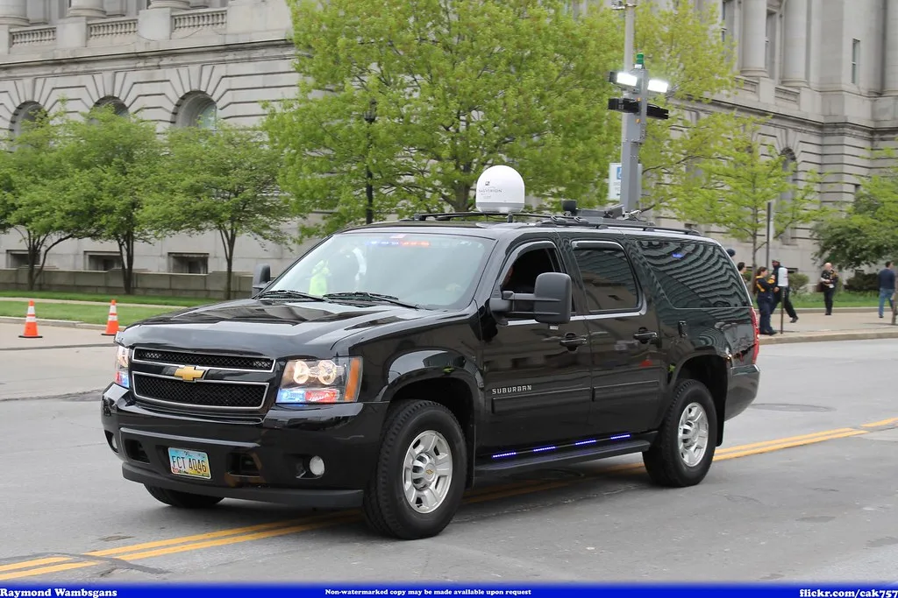
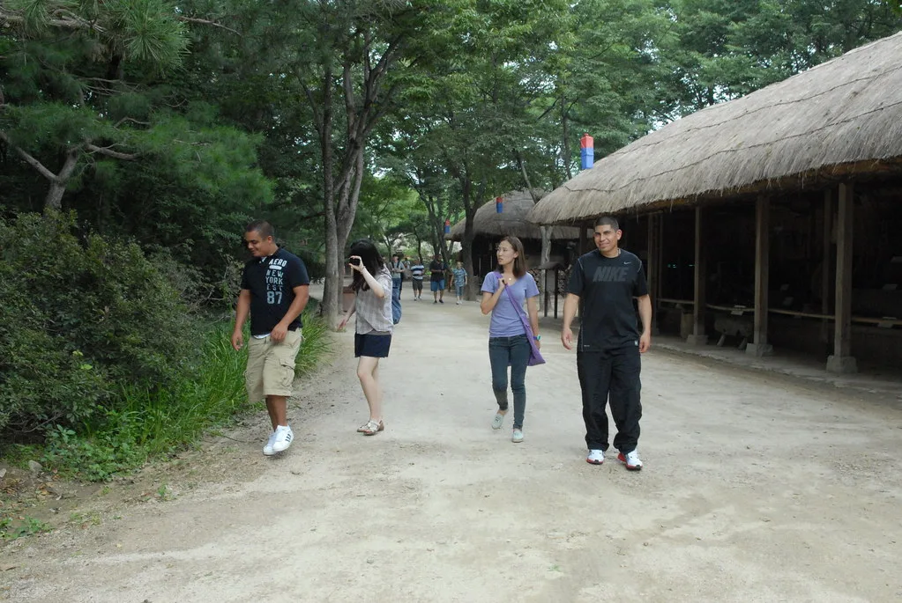

김지용 중수청장, 임명 2주 공백 끝에 첫 출근…청문보고서엔 '적격·부적격' 병기
김지용 초대 중대범죄수사청(중수청)장이 16일 오전 본청에 첫 출근하며 공식 업무를 시작했다. 이재명 대통령이 전날인 15일 저녁 김지용 중수청장 임명안을 재가한 데 따른 것으로, 후보자로 지명된 지 38일, 중수청이 출범한 지 14일 만에 수장 공백이 해소됐다. 그간 중수청은 초대 청장이 임명되지 않은 상태에서 조직 정비와 업무 준비를 이어왔던 터라, 이날 첫 출근은 기관이 본격적으로 수사 기능을 가동하는 출발점으로 받아들여진다. 검찰의 직접수사권 일부를 넘겨받아 새로 꾸려진 조직인 만큼, 수장의 공백이 길어질수록 사건 처리 지연에 대한 우려도 함께 커져왔다.
임명에 앞서 국회 행정안전위원회는 15일 전체회의를 열어 여야 합의로 김 후보자에 대한 인사청문경과보고서 채택을 의결했다. 그런데 이 보고서에는 이례적으로 '적격'과 '부적격' 의견이 함께 담겼다. 후보자가 직무 수행에 필요한 자질과 능력을 갖췄다는 평가와 더불어, 과거 논란에 대한 소명이 충분하지 않다는 부적격 의견이 병기된 것이다. 여야가 청문보고서 채택 자체에는 합의했지만, 후보자에 대한 평가는 엇갈렸다는 뜻으로 해석된다.

부적격 의견의 근거로는 윤석열 전 검찰총장에 대한 징계 반대 공동성명 참여 경력, 김학의 전 법무부 차관 출국금지 사건, 정진웅 검사 독직폭행 사건 등 과거 논란들이 거론됐다. 행안위 소속 의원들 사이에서는 이 같은 과거 행적이 중수청장이라는 중책을 맡기에 충분한 소명이 이뤄졌는지를 두고 이견이 좁혀지지 않았던 것으로 전해진다. 다만 여야는 청문 절차 자체를 지연시키지는 않기로 하고 보고서 채택에 뜻을 모았다.
정치권의 관심은 이제 중수청의 '1호 수사' 대상이 누가 될지로 옮겨가고 있다. 현재 이재명 대통령, 한동훈 전 대표, 김승원 법무부 장관 등을 둘러싼 각종 정치적 사건들이 쌓여 있는 상황에서, 신설 기관인 중수청이 어떤 사건을 가장 먼저 다루느냐가 기관의 정치적 중립성을 가늠하는 첫 시험대가 될 것이라는 전망이 나온다. 여야 모두 중수청의 초기 행보를 예의주시하고 있다.

일각에서는 김 청장 임명을 두고 "대통령이 지지층과 이별을 통보한 것"이라거나 "또 다른 대검 중수부를 만든 것"이라는 비판적 목소리도 나왔다. 반면 여권 일부에서는 검찰 개혁의 완성을 위해 불가피한 선택이었다는 평가도 함께 제기된다. 이처럼 임명을 둘러싼 찬반 여론이 뚜렷하게 갈리는 가운데, 법제처장은 최근 "대법원장의 제청권은 제안의 의미"라는 취지의 발언을 내놓으며 사법부 인사를 둘러싼 논쟁에도 영향을 미치고 있다.
중수청은 기존 검찰의 직접수사 기능 일부를 이어받아 출범한 신설 수사기관으로, 정치적 중립성 확보가 출범 초기부터 핵심 과제로 꼽혀왔다. 김 청장이 취임 일성으로 어떤 메시지를 내놓을지, 그리고 실제 수사 착수 과정에서 여야의 우려를 얼마나 불식시킬 수 있을지가 향후 기관의 안착 여부를 가를 것으로 보인다. 국회 차원의 추가 검증과 감시도 계속될 전망이며, 여야 모두 중수청의 초기 수사 대상 선정과 수사 속도를 지켜보며 추가 문제 제기 여부를 판단할 것으로 예상된다. 정치적으로 민감한 사건들이 줄줄이 대기하고 있는 만큼, 김 청장이 임기 초반부터 상당한 시험대에 오를 것이라는 관측이 지배적이다.